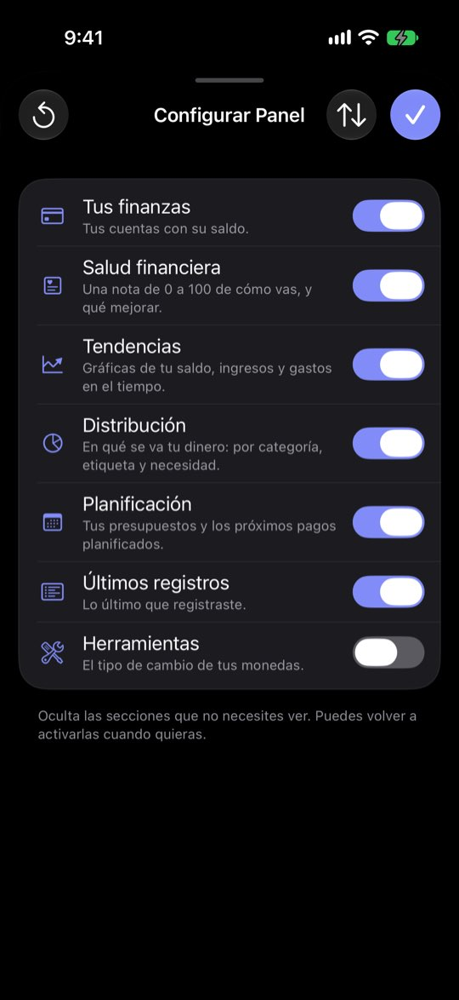
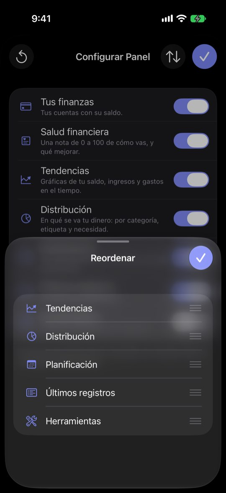

Configurar Panel: iconos sin texto, un «Restablecer» sin aviso y dos sitios para lo mismo
ficha con el reloj del simulador en el 20 de noviembre de 2026: cuatro cuentas (Ahorros USD $33,615 · Cuenta Principal S/ −53,738.91 · Efectivo S/ 380 · Tarjeta de crédito S/ 1,284.30 por pagar), balance de noviembre S/ 6,882.40 (entró S/ 12,910.40, salió S/ 6,028), saldo total S/ 64,690.04 y una nota de salud de 99. El saldo negativo de la Cuenta Principal sale de cómo la semilla reparte dos años de gastos; aquí sirve para ver qué hace el Panel con una cuenta en rojo. Ninguna cifra es de una persona real.Lo que se ve hoy
- Observado Capturas 12 y 13
- Observado Código: restablecer sin confirmación y «Guardar» que solo cierra (PanelSectionsConfigView.swift:51-58 y 70)
- Hipótesis Quien busca apagar una gráfica concreta no sabe que está en el ▦ de la sección


Alternativas
Todas con el mismo caso. Las cifras salen de las capturas salvo donde la maqueta dice «ilustrativo».
Botones con texto
«Restablecer…» (con confirmación), «Cambiar el orden» y «Listo». La salud se describe sin rango.
A favor
- Solo textos y una confirmación
En contra
- Sigue habiendo dos hojas y dos sitios
Ordenar en la misma hoja
Las asas de arrastre van en la misma lista; las secciones apagadas, al final.
A favor
- Una hoja menos
En contra
- Lista con interruptores y asas: más gestos en poco espacio
Secciones y widgets juntos
Cada sección se despliega y enseña sus widgets con su interruptor.
A favor
- Un solo sitio para todo
En contra
- La hoja se vuelve larga
- Duplica lo que hace el ▦ de cada sección (¿se quita?)
Lado a lado
| A | B | C | |
|---|---|---|---|
| Se entiende sin probar | Sí | Sí | Sí |
| Un solo sitio | No | No | Sí |
| Esfuerzo | Bajo | Medio | Medio-alto |
Recomendación
A: barato y quita el único gesto destructivo sin aviso. B y C solo si la telemetría dice que la hoja se usa.
Decide Jürgen
¿Botones con texto y confirmación (A)? ¿Merece la pena unificar con los widgets (C)?
Revisión por vistas 2.3 · Panel · 7-nov-2026. Capturas del simulador (build Debug de origin/2.3, iPhone 17 Pro e iPad Pro 13, iOS 27.2, modo oscuro, datos ficticios). Los siete perfiles son lentes simuladas, no entrevistas.